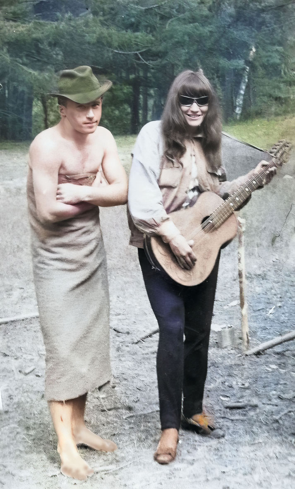
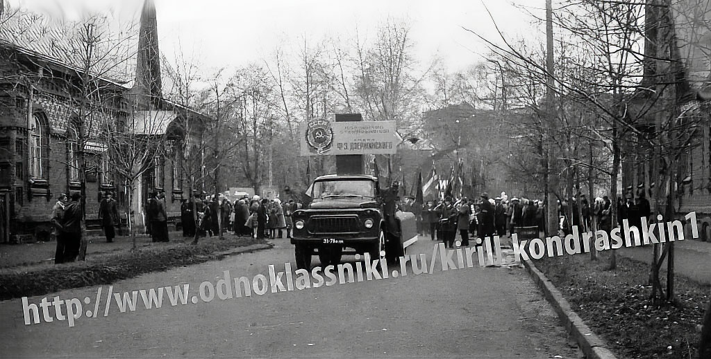
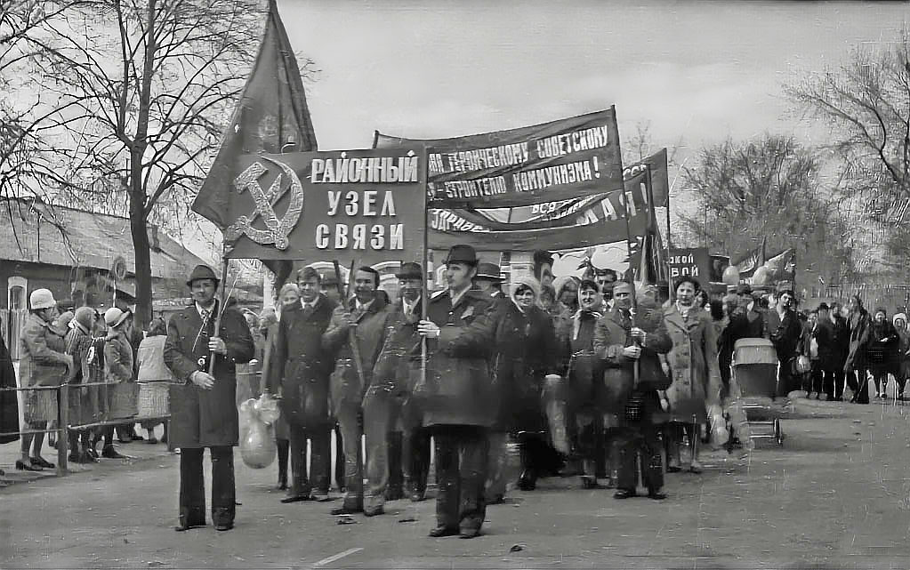
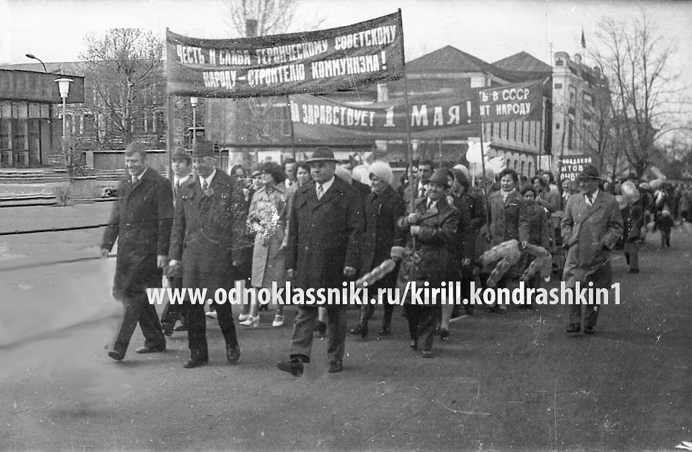
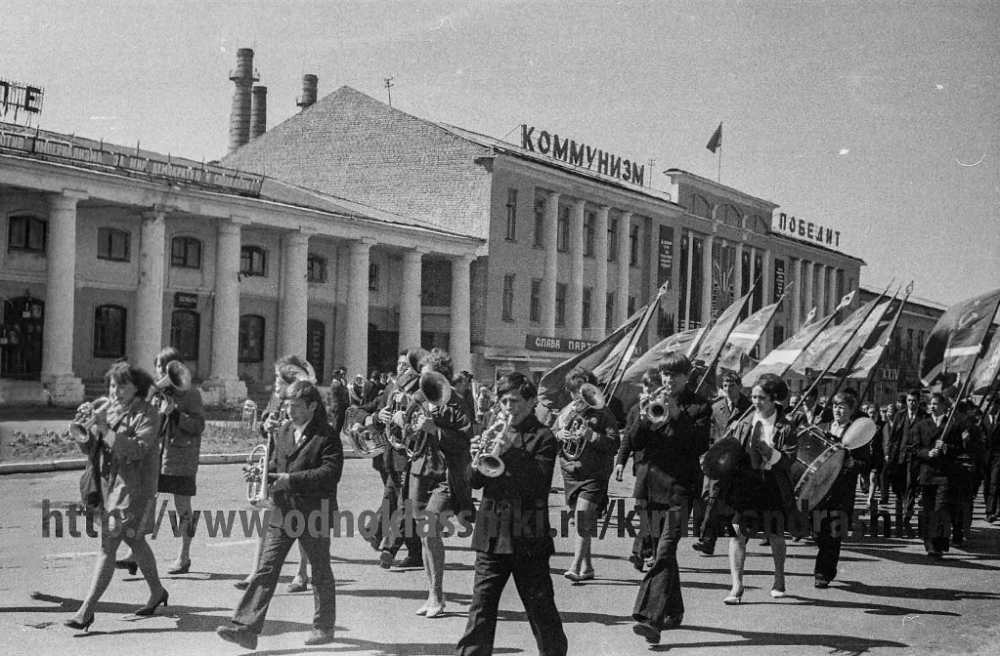
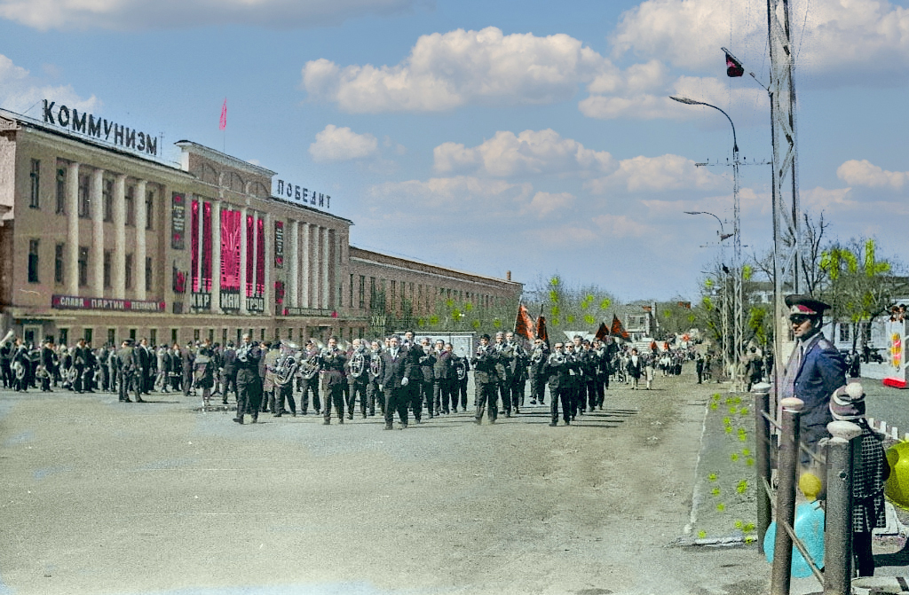

Моя фабричная юность

На пикнике в 17 лет. В папиной шляпе и мамина гитара.
Лес, девчонки, костёр и звёздное небо над нашими головами.
Так как я был подвижным и любознательным мальчиком среди моих знакомых были дочь героя войны, профессора из института стекла, офицера милиции, девушки и юноши не вылезавшие из нищеты и тюрем по тем или иным причинам.
Одни, как и я, были осторожны, любознательны, позже закончившие свои университеты и создали свои семьи, а другим повезло меньше.
Однако вся наша юношеская беззаботная жизнь сковывалась, уравнивалась неведомой силой, ведшей страну и отдельные страны мира несмотря на две мировые войны пролетариев всех стран друг с другом к объединению ещё не остывших от войны пролетариев. Для чего? Для новой войны? Мне было не понятно.
Позже я обозначил для себя поведение царских и большевистских властей как преступление против человечности. Они войнами и репрессиями ввели начинающих граждан России, а позже и СССР в социально-психологический шок, подобный шокам кошек выросших в квартирах вместе с собаками. Поддержание этого социально-психологического состояния происходило начальством, партийными органами и государственными СМИ. Запрет на иные точки зрения не давал проснуться в широких слоях населения критическому сознанию гражданина.
Однажды, исследуя пределы шока на поведене живых организмов я запустил ротана в аквариум с гупиями и они не выдержали этого и все выпрыгнули из аквариума на пол комныты.
В моё время в условиях диктатуры я и окружающее меня больное взрослое население гуляли на демонстрации с флажками и шариками и не понимали объективный ход развития человека и гражданского общества.
Из-за юности вне комсомола я был инертным, но продолжал критически наблюдать, как в школе с последней парты, за населением. Я не был советским человеком, но у меня не было причин и условий стать человеком антисоветским, диссидентом.

Фото группы студентов после прохождения колонны техникума на 7 ноября мимо какогото дядки в шляпе на трибуне в красной материи, который крикнул нам: "Правильной дорогой идёте, товарищи!" Мы ответили: " Ура!!!".

Вокруг разваленного храма Святого Георгия Победонсца 7 ноября и 1 мая ежегодно собирались колонны учащейся молодёжи и трудовых коллективов города Гусь-Хрустальный, чтобы пронести плакат СЛАВА КПСС! и крикнуть УРА!!! на приветствие местного партийного начальства.



В свои 17-18 лет некому было говорить со мной об общественно-политической жизни в стране и я потом об этом сожалел.
Мне надо было бы подробнее расспросить отца и маму о их жизни во время войны, после войны, после трагедии семьи и почему отец перестал носить свои шляпы, а мама играть на гитаре.
Молодёжи надо чаще разговаривать с родителями об обществе в котором живём. При этом инициативу надо проявлять молодым.
Может быть увлечение техническими науками и случайное пребывание вне комсомола вытеснило в моём сознании общественные проблемы, но сохранило случайно появившееся в юности критическое мышление?
Фото раскрашены в 2021 году

Но и после равала СССР население не смогло освоить три ценности: сила, деньги и знание на основе достоинства человека и решило добывать деньги и купить своё счастье в ближайшей Пятёрочке.